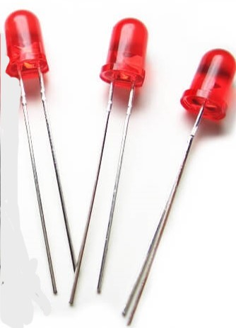
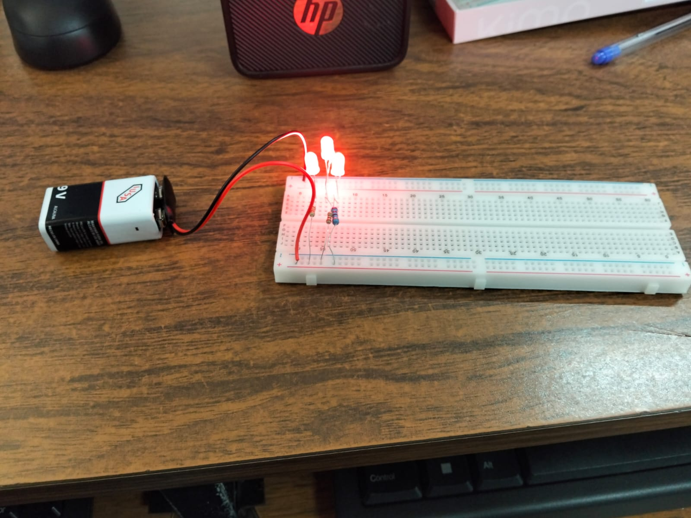
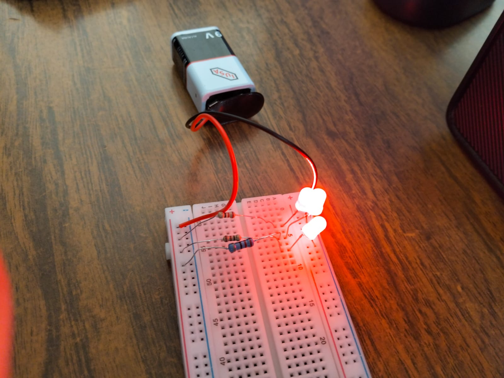
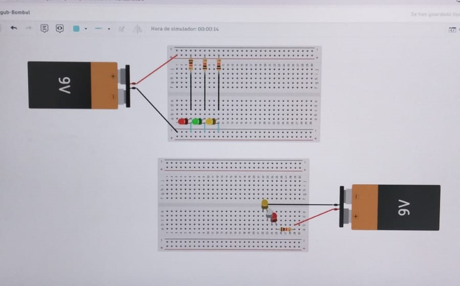
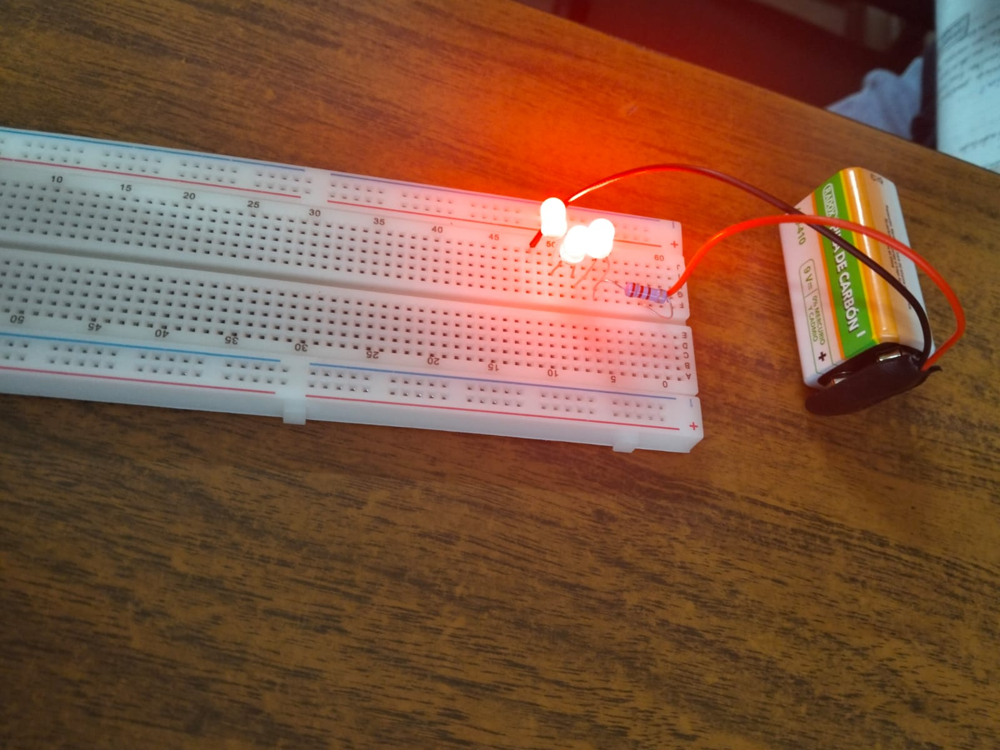
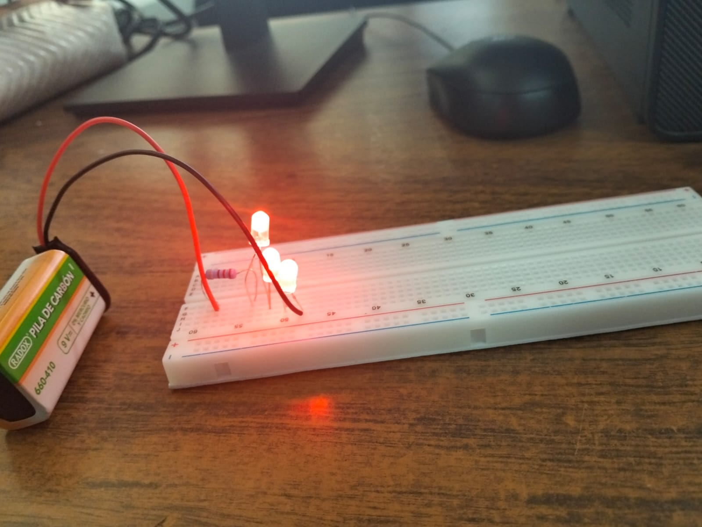
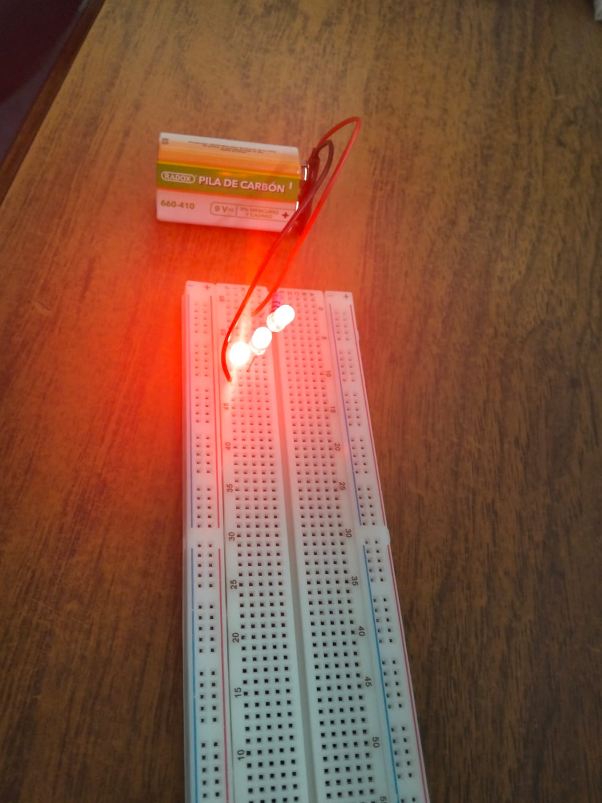
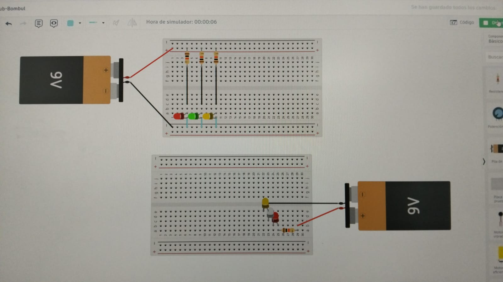

Ejercicio 1
Elementos que aparecen
Batería de 9V
Es la fuente de energía del circuito. Está conectada mediante cables rojo (+) y negro (–).

Protoboard
Placa blanca con orificios para hacer conexiones sin soldar. Tiene rieles laterales para alimentación (línea roja y azul).

LEDs
Tres LEDs rojos encendidos Están conectados en la parte superior del protoboard. Emiten luz, lo que indica que el circuito está cerrado y funcionando.
Resistencias
Se observan resistencias conectadas en serie con los LEDs. Sirven para limitar la corriente y evitar que los LEDs se quemen. Cables jumper Distribuyen la corriente desde la batería hacia el circuito.

¿Qué tipo de conexión es?
Por la forma en que están colocados los LEDs y las resistencias, parece que están conectados en paralelo con resistencias individuales, lo cual es correcto porque: Cada LED recibe el mismo voltaje. Cada LED tiene su propia resistencia para controlar la corriente. Si uno se apaga, los demás siguen encendidos.
 ¿Qué demuestra esta práctica?
Este montaje sirve para aprender: Uso correcto del protoboard. Polaridad de los LEDs (ánodo y cátodo). Importancia de las resistencias. Diferencia entre conexión en serie y paralelo. Cómo alimentar un circuito con una batería.

🔴 Punto importante
En esta imagen el circuito está mejor armado que el anterior porque sí incluye resistencias, lo que protege los LEDs y hace que el montaje sea seguro.
Ejercicio 2
Elementos que aparecen
Batería de 9V
Es una batería rectangular (tipo carbón). Proporciona la energía al circuito.
Cables (rojo y negro)
Rojo: normalmente es el polo positivo (+). Negro: normalmente es el polo negativo (–).

Protoboard
Placa blanca con muchos orificios. Sirve para conectar componentes sin necesidad de soldar.
LEDs
Tres LEDs rojos encendidos Están conectados en la parte superior del protoboard. Emiten luz, lo que indica que el circuito está cerrado y funcionando.
Resistencias
Se observan resistencias conectadas en serie con los LEDs. Sirven para limitar la corriente y evitar que los LEDs se quemen. Cables jumper Distribuyen la corriente desde la batería hacia el circuito.
¿Qué está pasando en el circuito?
Los LEDs están conectados directamente a la pila de 9V, ya que están encendidos.
 🔴 Importante
No se observa ninguna resistencia en serie. Los LEDs necesitan una resistencia (por ejemplo 220Ω o 330Ω) para limitar la corriente. Sin resistencia, pueden: Quemarse Reducir su vida útil Consumir demasiada corriente

Tipo de conexión
Por la posición, parece que los LEDs están conectados en paralelo, porque: Todos están encendidos con la misma intensidad. Cada uno probablemente recibe el mismo voltaje de la pila. Si estuvieran en serie: Se verían menos brillantes. El voltaje se repartiría entre ellos.
¿Qué aprendizaje muestra la imagen?
Este montaje sirve para: Practicar conexiones básicas. Entender polaridad (ánodo y cátodo). Aprender cómo distribuir energía en un protoboard. Diferenciar conexiones en serie y paralelo.
